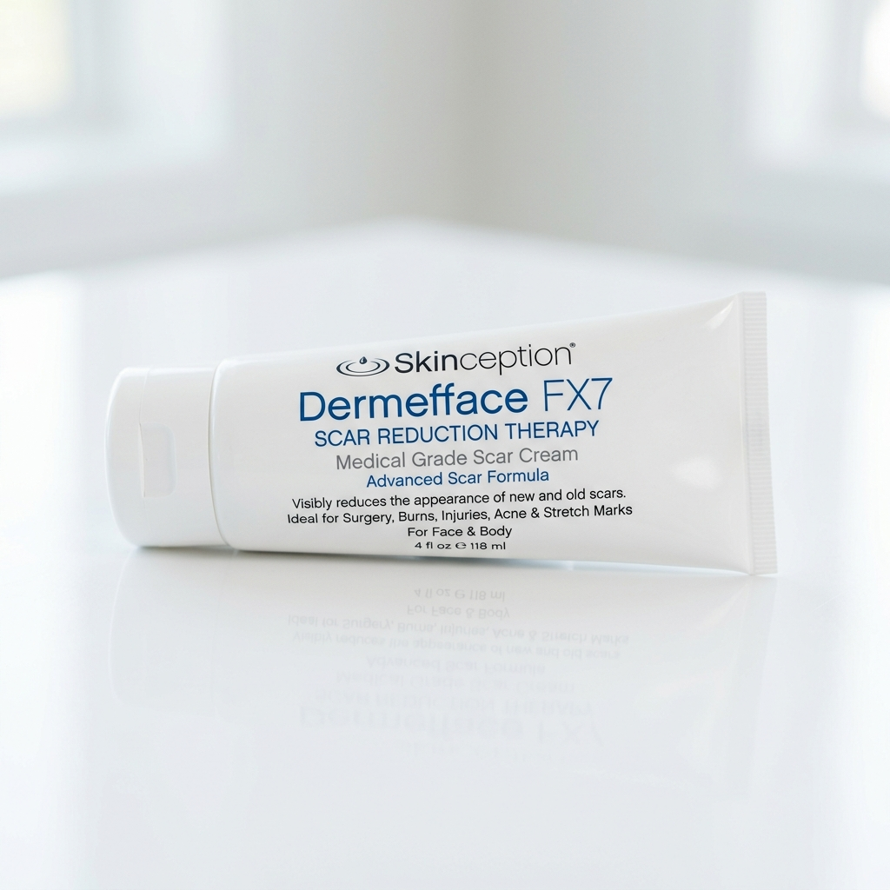
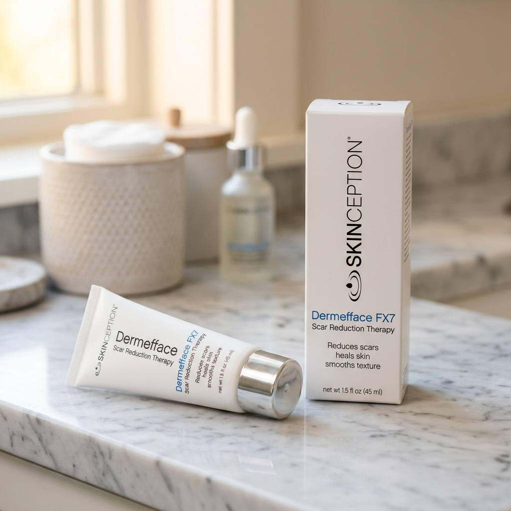
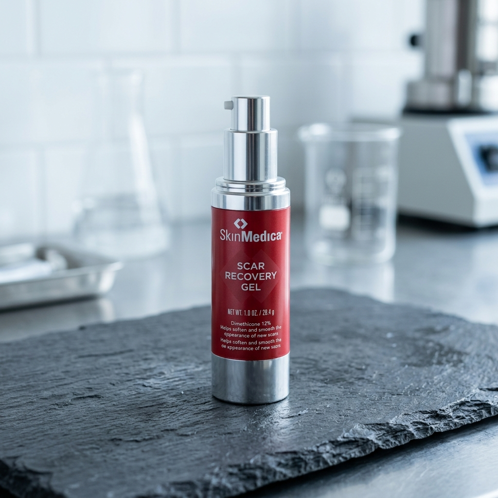

Dermefface FX7® Review: Can This Serum Really "Pave Over" Acne Scars & Surgical Marks?
By Derm Audit Editorial Team • Updated August 2026 • 6 Min Read

Why Do Scars Look Lumpy, Red, and Uneven?
Imagine a busy highway gets a giant pothole in the middle of rush-hour traffic (like when you get a deep cut, surgical incision, or bad cystic acne breakout).
Your body panics! Instead of taking time to pave smooth, high-grade asphalt, the emergency road crew just dumps random, messy gravel everywhere as fast as possible to plug the hole so you don't bleed.
That messy emergency gravel is called Type III scar collagen. It seals the wound, but it leaves behind a raised, discolored, hard lump that feels tough and doesn't match the rest of your smooth skin.
⚠️ Why Standard Silicone Gels Fall Short:
Drugstore silicone gels only sit on top like plastic wrap. Sure, keeping a scar moist helps a little, but it doesn't give your skin cells the biochemical blueprints they need to dig up the messy gravel and replace it with fresh, flat skin.
How Dermefface FX7® Remodels Scar Tissue (The Master Foreman)
Skinception Dermefface FX7™ acts like the world's strictest construction foreman arriving at the job site. It commands your cells to do three coordinated repairs over your skin's natural 28-day turnover cycle:
- Phase 1: Calm the Road Rage (Inflammation Control) — DL-Panthenol & Allantoin stop the itching, swelling, and angry redness.
- Phase 2: Dig Up the Lumpy Gravel (Remodeling) — Symglucan (10%) speeds up cell turnover, pushing damaged scar tissue to the surface to flake away.
- Phase 3: Pave Smooth Type-I Asphalt (Pro-Coll-One+) — Stimulates healthy Type-I collagen production by up to +1,190% so new skin grows flat, flexible, and seamless.
The 7 Active Remodeling Heavy-Hitters
1. Symglucan (10.0%)
The Cellular Turbocharger: Oat-derived beta-glucan fluid that penetrates deep to speed wound healing and reduce raised scar height.
2. Pro-Coll-One+ (2.0%)
The Asphalt Paving Peptide: Boosts Type I healthy collagen synthesis by an astounding 1,190% to flatten bumpy tissue.
3. Pentavitin (5.0%)
The 72-Hour Moisture Magnet: Binds to keratin to soften rock-hard scar tissue so it doesn't dry into an itchy, rigid keloid.
4. Vitalayer (3.0%) + Niacinamide
The Pigment Normalizer: Regulates cell turnover and fades dark purple, red, and brown discoloration around old marks.
Clinical Matchup: Dermefface FX7™ vs. SkinMedica Scar Gel
| Feature / Specification |
 Dermefface FX7™
Winner: Top Scar Remodeler
|
 SkinMedica Scar Gel
|
|---|---|---|
| Active Mechanism | Multi-Active Remodeling: Symglucan (10%), Pentavitin (5%), and Pro-Coll-One+ actively rebuild flat structural skin. | Basic botanical hydration using Centella Asiatica complexes (Centelline®). |
| Collagen Remodeling Boost | Pro-Coll-One+ stimulates smooth Type I collagen synthesis up to +1190%. | Lacks direct cell-signaling peptides to rebuild structural collagen ratios. |
| Moisture Lock Technology | Pentavitin (5.0%) locks moisture deep to soften tough scar fibers. | Standard silicone-based occlusive layer that washes off easily. |
| Money-Back Guarantee | 90-Day Money-Back Guarantee | No guarantee on opened packages. |
| Retail Price | $59.95 (Direct manufacturer price) | $110.00 (Luxury clinical markup) |
| Best Action | Claim Winner Discount | View SkinMedica |
What We Love:
- Clinically proven +1,190% boost in smooth Type I collagen
- Fades acne scars, surgical incisions, burns, and accidental cuts
- Pentavitin stops scar tissue from itching and turning rock-hard
- Non-greasy, fast-absorbing gel texture layers easily under sunscreen
- Protected by Skinception's 90-day 100% money-back guarantee
Things to Keep in Mind:
- Must wait until stitches or open wounds are fully closed before applying
- Old mature scars (over 2 years old) take 60–90 days of consistent application
The 90-Day Scar Flattening Timeline
Days 1 – 14
Itching and tightness stop immediately. Hard scar tissue begins softening under deep hydration.
Days 15 – 45
Raised bumpy edges flatten out. Red, purple, and dark brownish scar discoloration visibly fades.
Days 46 – 90+
Type I collagen replaces scar tissue. Skin texture blends smoothly and seamlessly into surrounding skin.
Frequently Asked Questions
Does Dermefface FX7 work on old scars?
Yes! While fresh scars remodel faster, Dermefface FX7 is clinically formulated to soften and fade mature scars that are years old. For older scars, we recommend consistent use for 60 to 90 days.
Can I use it on pitted acne scars?
Yes. The Pro-Coll-One+ peptide stimulates Type I collagen synthesis directly inside the depressed pits to help fill and smooth indented post-acne texture.
Ready to Smooth Away Scars for Good?
Rebuild flat, seamless, healthy skin with Dermefface FX7™ backed by a 100% risk-free 90-day money-back guarantee.
Visit Official Dermefface FX7 Store & Claim Discount